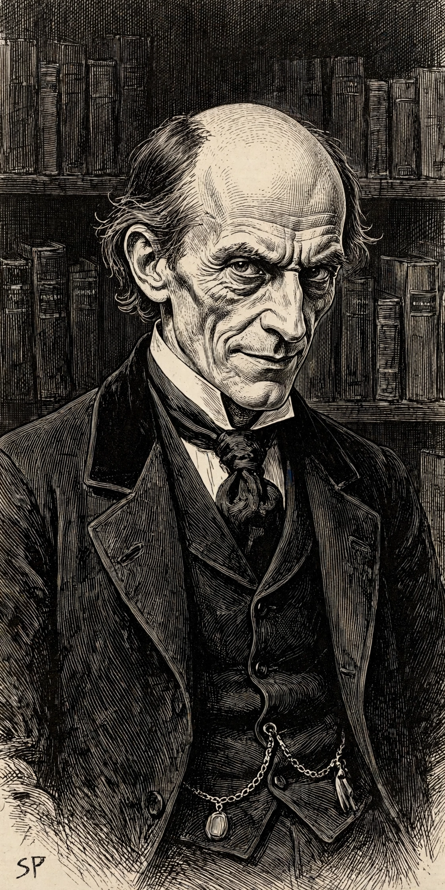

| Professor James Moriarty | |
|---|---|
 Moriarty in Sidney Paget's illustration | |
| Created by | Arthur Conan Doyle |
| First appearance | "The Adventure of the Final Problem" (1893) |
| Occupation | Mathematics professor; criminal mastermind |
| Nickname | "The Napoleon of crime" |
Professor James Moriarty is a fictional character and criminal mastermind created by Arthur Conan Doyle to be a formidable enemy for the author's other character, the detective Sherlock Holmes. Holmes describes Moriarty as "the Napoleon of crime": a former mathematics professor who secretly directs a vast criminal organization while maintaining a respectable public reputation. Holmes says of him, "He is the organizer of half that is evil and of nearly all that is undetected in this great city."
Moriarty appears directly in only two stories: "The Adventure of the Final Problem" (1893), in which he apparently falls to his death with Holmes at the Reichenbach Falls in Switzerland, and the novel The Valley of Fear (1914–15), set earlier. He is mentioned in several other stories. Doyle introduced the character largely as a device to kill off Holmes, whose popularity he had come to resent; public demand eventually forced Holmes's return in "The Adventure of the Empty House" (1903), which revealed that Holmes had survived and only Moriarty had died.
According to Holmes, Moriarty wrote a celebrated treatise on the binomial theorem at 21 and won a mathematical chair at a small university, but hereditary criminal tendencies and scandal drove him to London, where he became a consulting criminal — the mirror image of Holmes the consulting detective. His chief lieutenant is Colonel Sebastian Moran. The character may have been partly inspired by the real American criminal Adam Worth, whom Scotland Yard also dubbed "the Napoleon of crime".
Moriarty has become the archetype of the supervillain and the hero's intellectual equal, portrayed on screen by actors including George Zucco, Henry Daniell, Laurence Olivier (voice), Andrew Scott in the BBC series Sherlock, and Jared Harris in the Guy Ritchie films. Holmes, in the stories, operates from 221B Baker Street.
Categories: Sherlock Holmes characters · Fictional criminals · Fictional professors